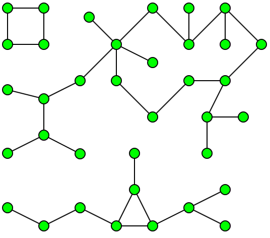

Uma componente de um grafo não orientado (undirected graph) é um conjunto de nós que têm caminhos entre si.
No exemplo seguinte podemos observar um grafo com três componentes (reparem que os arcos não têm setas porque o grafo é não orientado):

Para calcular quais são os componentes de um grafo podemos executar o seguinte algoritmo:
1. Definir todos os nós como não visitados
2. Para o próximo nó V não visitado:
a) aplicar Depth-First-Search(V) e marcar esses nós como visitados
Em Java vamos criar um método que devolve um vector de vetores (cada um é um componente que possui os índices dos seus nós):
/**
* Find connected components of an undirected graph
* @requires an undirected graph
* @complexity O(V + E)
* @return An array of components (each component is an array of connected nodes)
*/
public int[][] components() {
boolean[] visited = new boolean[size];
ArrayList<int[]> l = new ArrayList<int[]>();
while(true) {
int next = 0;
for(;next<size && visited[next];next++); // find next unvisited node
if (next==size) // no more nodes to visit
break;
int[] nodes = dfs(next);
for(int node : nodes)
visited[node] = true;
l.add(nodes);
}
int[][] result = new int[l.size()][];
int i=0;
for(int[] component : l)
result[i++] = component;
return result;
}
Com este método podemos saber facilmente se um grafo é totalmente conectado (i.e., só tem uma componente):
public boolean isConnected() {
return components().length == 1;
}
Para experimentar este código resolvam o UVa459 - Graph Connectivity.
Componentes Fortes de Grafo
A noção de componente que falámos na secção anterior fiz respeito a grafos não-orientados. Para grafos orientados (onde os arcos têm uma direcção), existe a noção de componente forte. Em inglês diz-se strongly connected component e abrevia-se normalmente por SCC. Uma SCC é um subconjunto de nós que, entre si, estão fortemente conectados, ie, há caminhos entre todos eles.
Na imagem seguinte observamos três SCC's:
Reparem, por exemplo, que o nó b e c não pertence ao mesmo SCC dado que não existe um caminho do nó c para b.
Existem dois algoritmos tradicionais para resolver este problema, a versão de Kosaraju e a de Tarjan. O algoritmo aqui implementado é a versão de Tarjan:
/**
* Find strong connected components (SCC) of a *directed* graph
* For any pair of vertices u and v in a SCC, there is a path from u to v and vice versa
* Cf. Halim book, pags. 133-4
* Cf. https://en.wikipedia.org/wiki/Tarjan%27s_strongly_connected_components_algorithm
* @requires a directed graph
* @complexity O(V + E)
* @return An array of components (each component is an array of strongly connected nodes)
*/
public int[][] strongComponents() {
ArrayList<int[]> l = new ArrayList<int[]>();
SSC_Stack = new Stack<Integer>();
SSC_OnStack = new boolean[size];
SSC_low = new int[size];
SSC_index = new int[size];
SSC_counter = 0;
for(int i=0; i<size; i++)
SSC_index[i] = SSC_UNVISITED;
for(int i=0; i<size; i++)
if (SSC_index[i] == SSC_UNVISITED) {
SSC(i); // process a connect set of nodes
int k = SSC_Stack.size();
while (!SSC_Stack.isEmpty()) { // create each strong component
ArrayList<Integer> lSSC = new ArrayList<Integer>();
do {
int node = SSC_Stack.pop();
SSC_OnStack[node] = false;
lSSC.add(node);
k--;
} while (SSC_low[k]!=SSC_index[k]);
l.add(list2array(lSSC));
}
}
int[][] result = new int[l.size()][];
int i = 0;
for(int[] component : l)
result[i++] = component;
return result;
}
private final int SSC_UNVISITED = -1;
private int SSC_counter;
private Stack<Integer> SSC_Stack;
private boolean[] SSC_OnStack;
private int[] SSC_low, SSC_index;
private void SSC(int node) {
// Set the depth index for 'node' to the smallest unused index
SSC_low[node] = SSC_index[node] = SSC_counter++;
SSC_Stack.push(node);
SSC_OnStack[node] = true;
for (int succ : sucessors(node)) // Consider successors of node
if (SSC_index[succ] == SSC_UNVISITED) {
SSC(succ);
SSC_low[node] = Math.min(SSC_low[node], SSC_low[succ]);
} else if (SSC_OnStack[succ])
SSC_low[node] = Math.min(SSC_low[node], SSC_index[succ]);
}
Experimentem resolver o UVa11838 - Come and Go com este algoritmo.
Outros problemas: